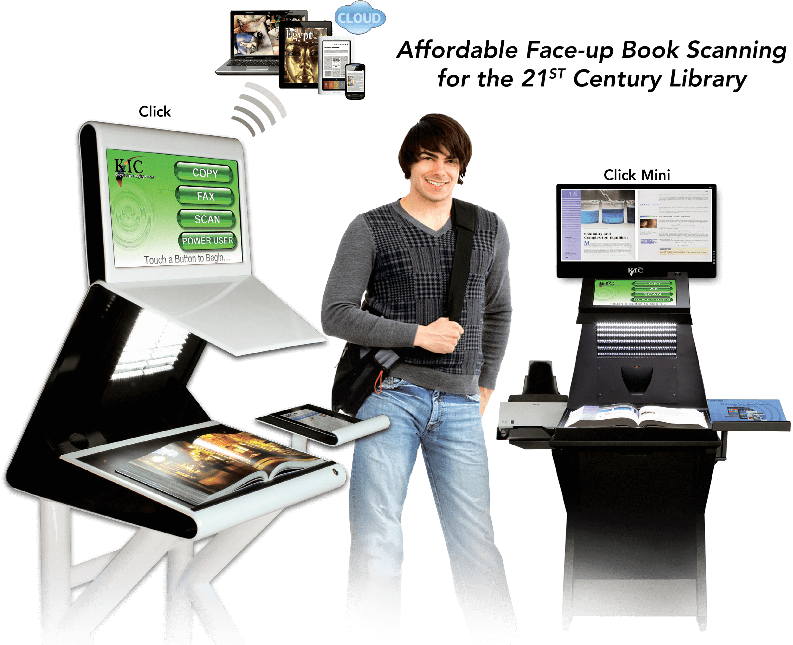
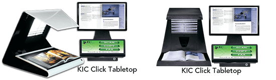
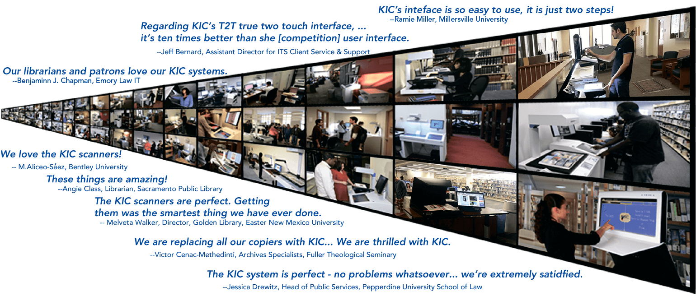
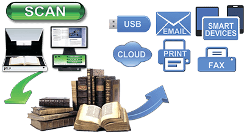
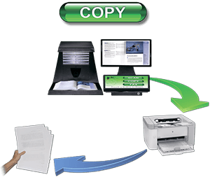
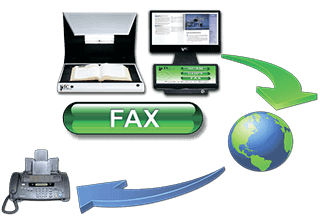
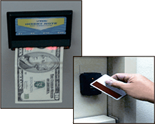

KIC
Click & KIC
Click
Mini
CAPTURE, COPY, FAX & COLLATE BOOK CONTENT

Study, Report, Research, Collaborate … Digitally
The KIC Click is a high-speed, face-up book capture system at an affordable price.
Its sleek and elegant look will complement any library floor. And with its True2TouchTM user
interface, KIC Click is as easy to use as it is beautiful. Are there any compromises? You decide.
The KIC Click captures nearly 20 book pages per minute for instant access on tablets,
notebooks, smart devices and easy transfer to desktop PCs and servers. With a bed size 30% larger
than its nearest competitor, it captures up to 22 x16 inch books and materials at an uncompromising
resolution of 300dpi.
Photocopiers, PCs, monitors and keyboards clutter up otherwise beautiful libraries across America.
The smooth but rugged black or white KIC Clicks totally reverse that trend, adding beauty to even
the most beautiful libraries.

KIC Serves Over Half of Students at Universities in America
In the U.S. alone, KIC serves over four million students at the top "brick and mortar" (non-online)
colleges and universities. With the introduction of the KIC BookEdge, KIC Click, and KIC Click Mini,
KIC is now affordable for virtually all institutions of higher learning and full-service public
libraries. Last decade, libraries typically 'added' several KICs, but since 2010 libraries have begun to
replace their entire patron-use copier fleets with self-serve book scanning systems.

A True Digital Age Multifunction System for
Academic & Public
Libraries

Book Scanning
Students at academic libraries want speed, and DLSG offers the fastest book scanners on the market.
Patrons at public libraries need simplicity, and KIC provides three of the simplest possible user
interfaces, one exclusively for scanning, one exclusively for copying and one exclusively for faxing.
And KIC's best-of-breed power user interface is only a touch away.

Copier Replacement
While multifunction copiers are partly digital, they are big mechanical machines with big maintenance
issues and tiny touch screens. As a copier replacement, KIC eliminates copier failure/service problems
and provides very large touch screens and view screens that are larger still. Organizing (collating,
clipping, rotating, etc.) pages on a huge touch screen is much easier than shuffling paper.
The digital age has steadily driven down the demand in libraries for paper copies to levels that make
it increasingly difficult to justify copiers. KIC self-service scanning systems reduce copier use
further
— to the point that attaching a small laser or ink jet printer is sufficient.

KIC systems also handle
much larger materials than copiers, and they scan books without damaging them. However, the most
compelling
benefit of KIC over copiers is KIC's speed, due mainly to its face-up scanning design, which is not only
significantly faster, but far easier to use.
Self-Serve Fax
KIC's huge touch screen and larger view screen make faxing extra easy. Users can compose, review, clip,
crop and change brightness and contrast of the pages of a fax before sending. KIC's step-by-step process
is
designed for easy operation by even the most timid users. All you need is an internet connection, and
DLSG
will provide the rest at a cost so low that fax revenue can pay for the KIC system in a few years or
less.
KIC Coins
Printing copies and faxing have per page costs that normally must be passed on to the user. KIC has
a
free,
built-in method of charging users for copies and faxes.
Simply print wallet-size "KIC Coins" on regular letter-sized paper in any denomination that you
like, cut them out, and sell them to users at the circulation desk or wherever you collect fees for
late
book returns.
KIC Compatible with Copy Card
& Cash System

All KIC systems are compatible with all
standard copy card and coin-op devices.
Since KIC transfers images to users’ computers electronically, costly expendables
are avoided, even for color! The library
can opt to keep all revenue it collects.